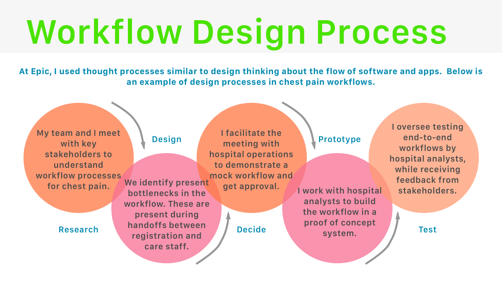
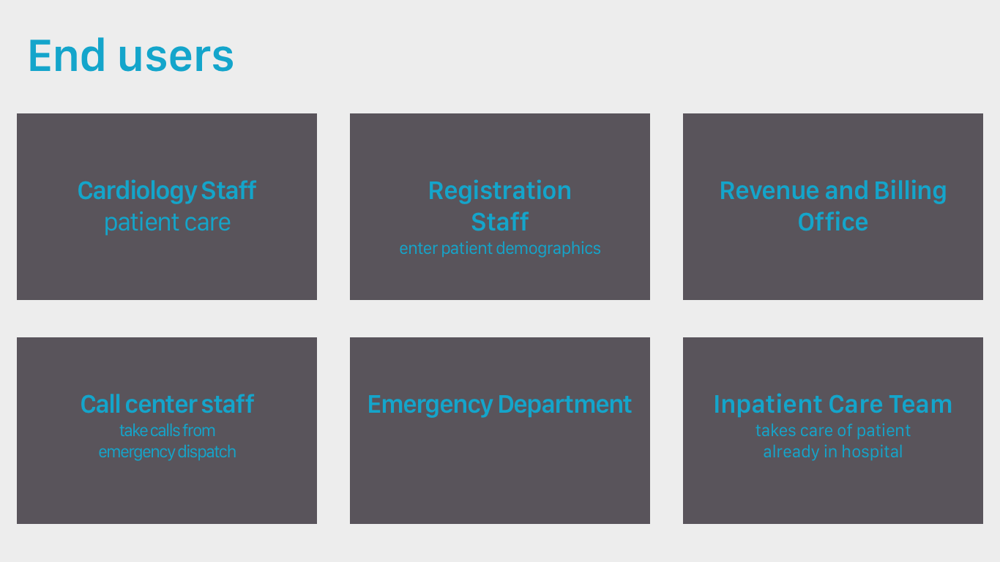
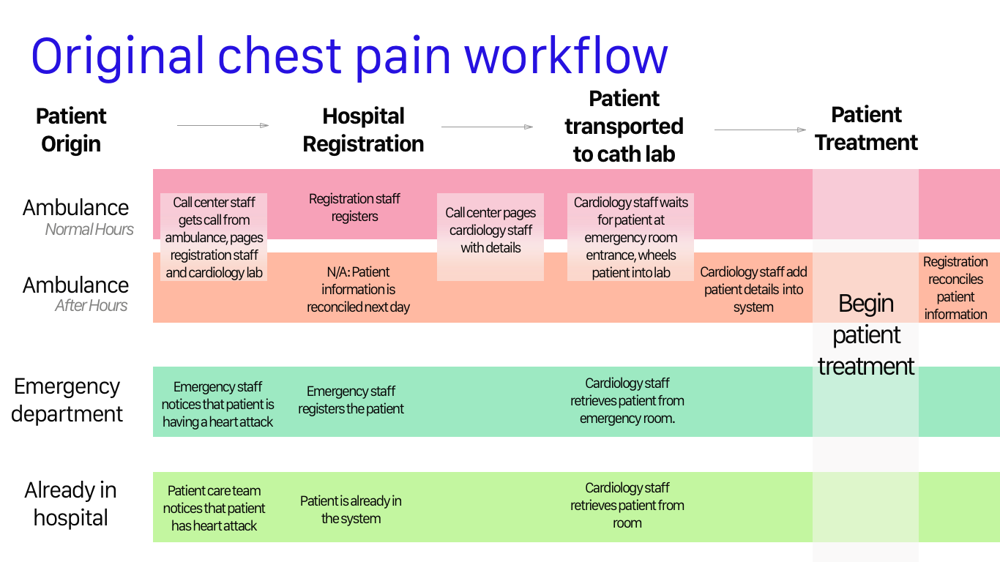
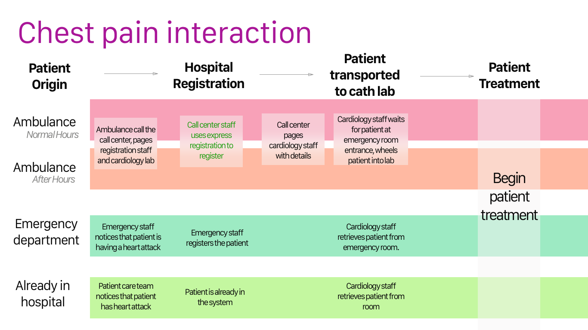

Due to a confusing workflow by multiple teams, heart attack care wasn't occurring quickly enough
Interviewed clinicians, administrators, stakeholders on their current workflows for door to balloon time
Developed, tested, and implemented a novel workflow that included making fixes to software and workflows so that clinicians start patient care faster
Now, hospital is looking at reducing heart attack care times from 90 minutes to 60 minutes.
Door-to-Balloon Time
Door to balloon time is a standard metric that measures how long it takes a patient to receive interventional heart care after the patient enters the hospital if they are having a heart attack. It is a standard metric, and hospitals need to keep the time under 90 minutes to reduce mortality rates. Some hospitals may “chest pain” coordinators who will time the workflow with a stopwatch from start to finish to analyze inefficiencies. I started as a product management associate. As I developed more of the product, I became the product management lead. I am responsible for determining the direction of product development, conducting user experience research, developing the design of the interfaces, and ensuring that both the UI/UX and RandD are hitting research and development milestones.
Problem
At one hospital, their door to balloon times were well below the 90 minute threshold, however they still believed that they had room for improvement. They had many different workflows depending on the situation, and they were concerned that it often led to confusion among staff.
My Role
While working as an implementation consultant for Epic, I worked with different hospitals to install cardiology software. Specifically for this study, I interviewed hospital administrators and staff about their current state workflows, and determined how that would fit into Epic’s software. As most hospitals are transitioning from software that doesn’t integrate these areas, many hospitals see this as a good opportunity to re-examine current state to reduce inefficiency. My work as an implementation consultant was an excellent foray into the design thinking process.

Discovery
During initial sessions at the hospital, I gathered the stakeholders together and discussed the chest pain workflow. In addition to the managers of the cardiology, registration, revenue, and emergency room departments, we invited nurses and patient care staff members to discuss their current state.

We asked questions such as:
Where do the patients originate? Are there differences in the workflow based on where they start?
What is the “standard” workflow, and are there any deviations?
What are the pain points of the workflow? Are there any bottlenecks?
Who is ultimately responsible for each handoff of the patient?
Once we interviewed and discussed current state workflows with mroe than 20 stakeholders, it was apparent that there were many deviations of the workflow, depending on whether it was during regular hours or after hours, whether the patient originated from the ambulance, emergency room, or if they were already admitted to the hospital. We compiled the answers and noticed that there were four distinct workflows:

Unpacking the Issues
For patients coming from the emergency room, or for inpatients, the workflows were fairly simple. The cardiology staff would be able to begin patient care quickly because they did not have to worry about registration. The main issues were summarized in four points:
Confusion about who was responsible for each step, because workflows changed due to situation.
Bottlenecks occurred prior to receiving care, because registration often took a long time.
If patients weren’t registered in the system prior to coming to the department, the cardiology staff would fix the issue, leading to delay in patient care.
When registration wasn’t done properly, cardiology staff weren’t able to pull up the patient’s chart. It also led to a complicated reconciliation process.
Fix Goals
Some parts of the workflow, such as patient transportation couldn’t be changed. For example, the hospital layout was such that ambulances could not come closer to the cath lab. However, it was clear that with some cooperation with each department, we could streamline the workflow.
Maximize the cardiology staff’s focus on patient care.
Streamline the workflow and standardize whenever possible.
Make the handoffs between each team smoother.
Reduce reconciling of the patient’s chart as much as possible.
Solution
Working with the hospital analyst team and internal Epic team, I focused on leveraging existing Epic functionality while determining end user changes. with coordinated a meeting to proposed a few changes to streamline the workflow.
Call center would perform registration for the patient. Cardiology staff would not have to enter in information about the patient once the patient got to the cardiology lab, and they could focus on registration.
For these heart attack patients, call center staff would use “express” registration. Separate from regular registration, they would enter only necessary information for billing and patient care. We worked with the registration staff to determine what fields were necessary and built them in the system.
Give the cardiology staff access to “express” registration. While we confirmed that the call center staff would be responsible for entering this information, we wanted to proposed giving the express registration to the cardiology staff as a fail safe measure.

Impact
We received approval from the departments, and during the course of the project, we created a proof of concept prototype and tested the workflow. When the hospital implemented the system, initially it took a coordinated effort of training end users, constant communication among the different departments, and careful metric observations to monitor improvements to the workflow. Their KPI metrics improved during the first week of implementing the system, and daily group meetings helped the departments identify where there were bottlenecks and quickly address them. Currently, the hospital is striving to lower door to balloon times to under 60 minutes.In terms of personal growth, this project was one of the reasons why I became interested in UX design. Epic's software had the flexibility to change the configurations and activities to fit the needs of this particular hospital. We adapted their workflows to work well with the software. But more can be done to fit the needs of the user.